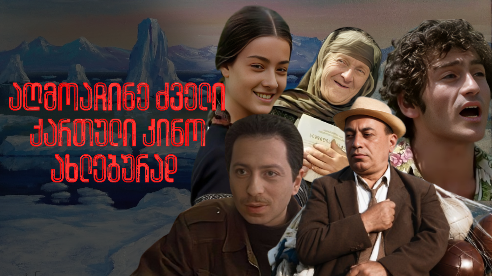
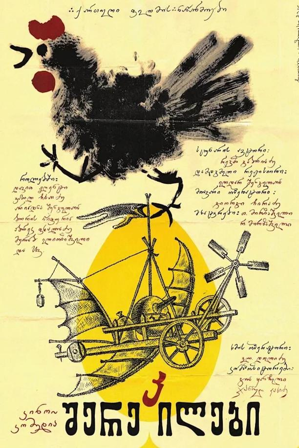
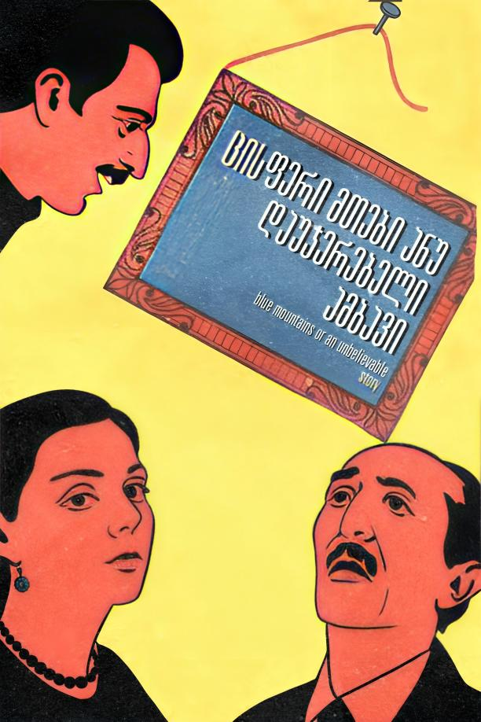
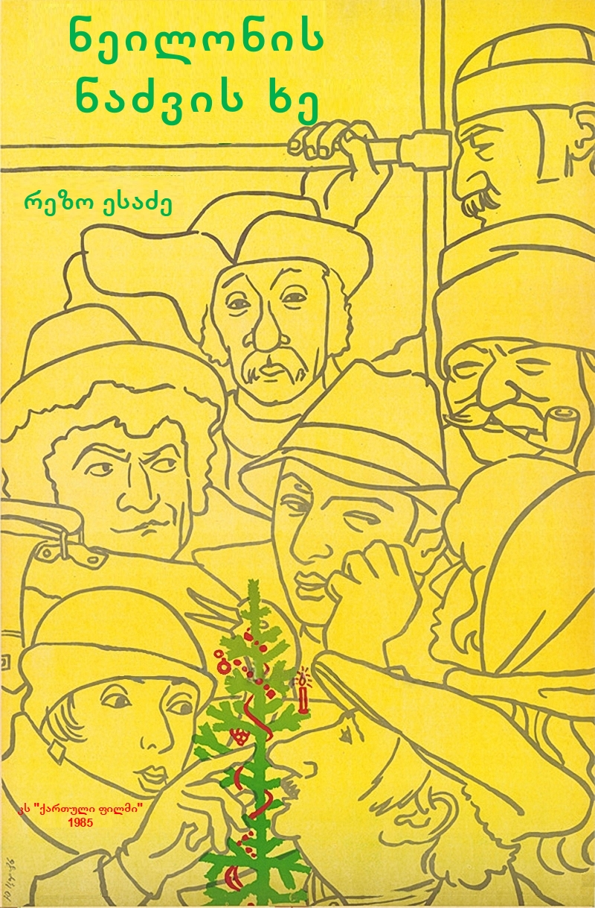
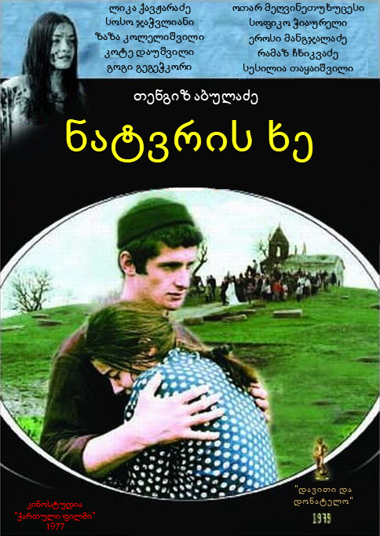
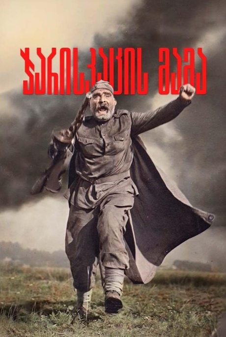
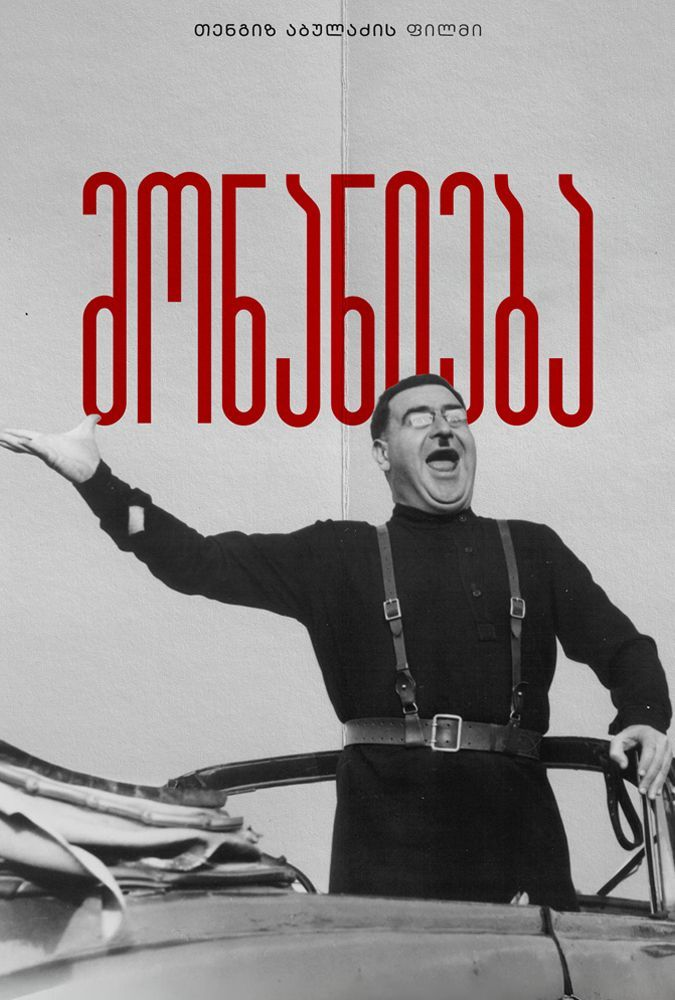
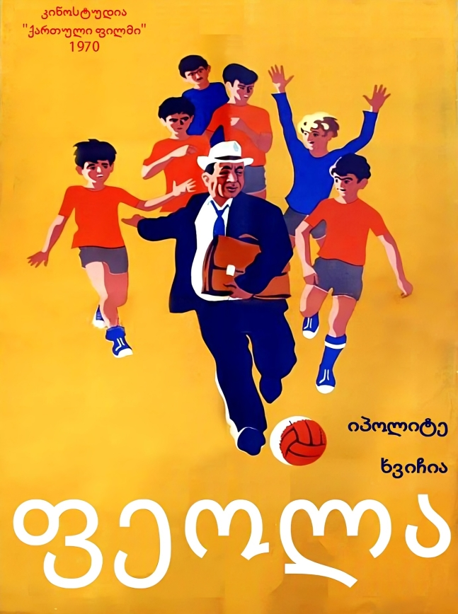
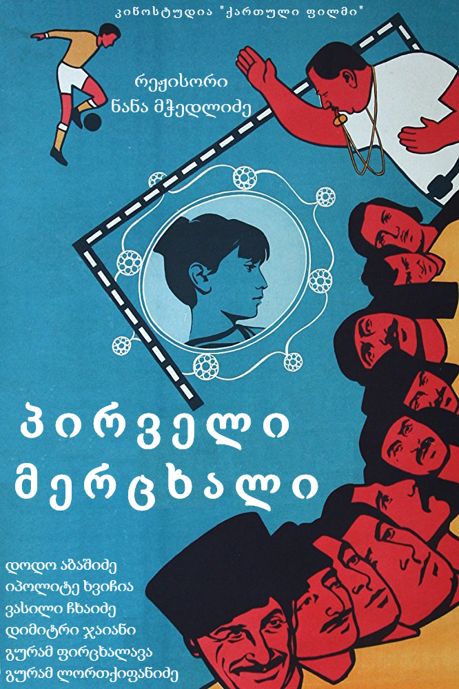
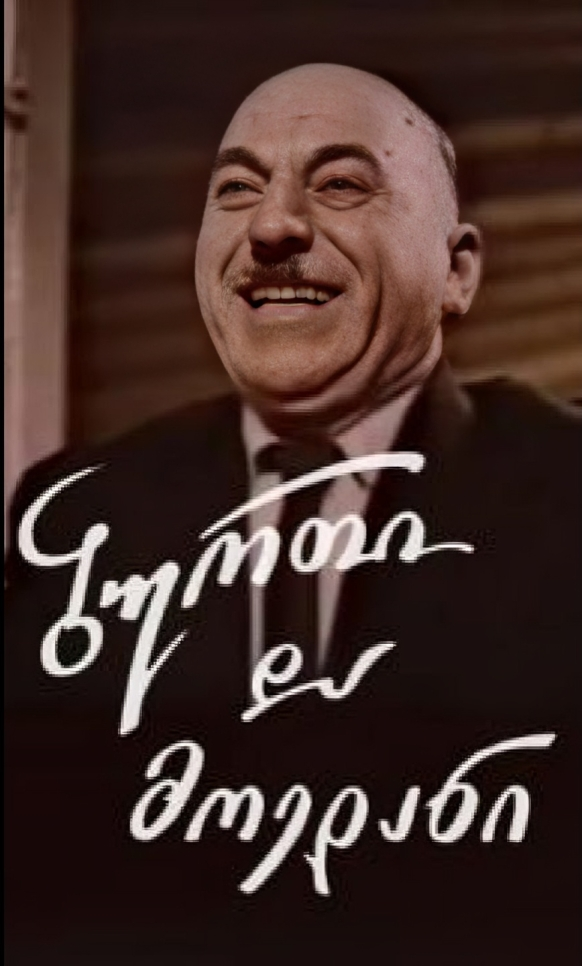

⭐ 8.5
რეჟისორი: ელდარ შენგელაია
წელი: 1973
აღწერა: მარგალიტაზე შეყვარებული ერთაოზი ციხეში ხვდება, სადაც „ცათმფრენის“ შემქმნელ მეცნიერს გაიცნობს.

⭐ 8.6
რეჟისორი: ელდარ შენგელაია
წელი: 1983
აღწერა: ახალგაზრდა მწერალს რედაქციაში მოთხრობა მიაქვს. მისი განხილვის მოლოდინში კი თვეები გადის.

⭐ 8.0
რეჟისორი: რეზო ესაძე
წელი: 1985
აღწერა: მგზავრების კომედიური და უცნაური საახალწლო ისტორია.

⭐ 8.0
რეჟისორი: თენგიზ აბულაძე
წელი: 1976
აღწერა: ულამაზესი და სევდიანი ამბავი სიყვარულსა და რევოლუციამდელ ქართულ სოფელზე.

⭐ 8.3
რეჟისორი: რეზო ჩხეიძე
წელი: 1964
აღწერა: ქართველი გლეხის, გიორგი მახარაშვილის გმირული გზა ომის ქარცეცხლში შვილის საძებნელად.

⭐ 8.0
რეჟისორი: თენგიზ აბულაძე
წელი: 1984
აღწერა: გენიალური ალეგორიული დრამა ტოტალიტარიზმზე, ტირანიასა და მონანიების ძალაზე.

⭐ 8.5
რეჟისორი: ბაადურ წულაძე
წელი: 1970
აღწერა: იპოლიტე ხვიჩიას საკულტო კომედია მებარგულზე, რომელიც უბნის ბავშვთა საფეხბურთო გუნდის მწვრთნელი ხდება.

⭐ 7.5
რეჟისორი: ნანა მჭედლიძე
წელი: 1975
აღწერა: ფეხბურთის პირველი ენთუზიასტების სახალისო და სევდიანი ისტორია ძველ ფოთში.

⭐ 8.1
რეჟისორი: გუგული მგელაძე
წელი: 1961
აღწერა: ბუღალტერი კვინტრაძის დაუვიწყარი და კომედიური თავგადასავალი ნანატრი საფეხბურთო მატჩის ბილეთის საძებნელად.